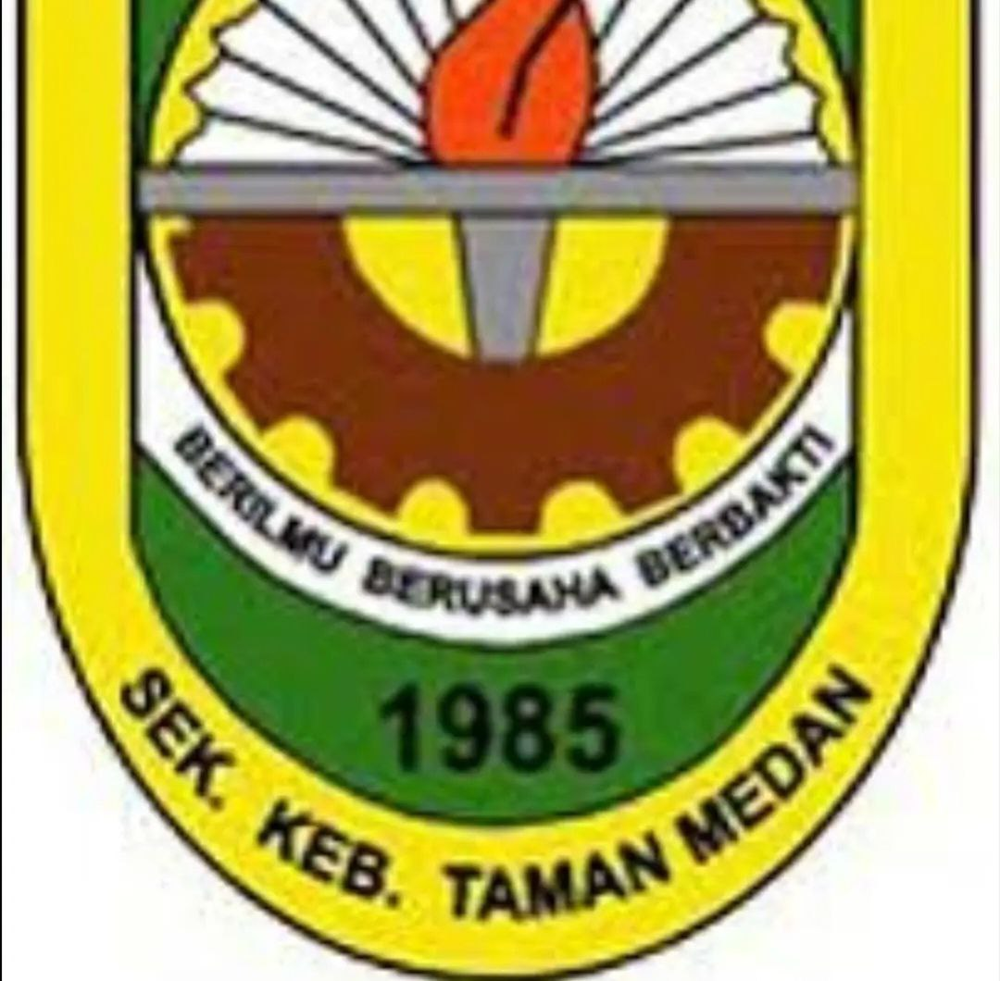
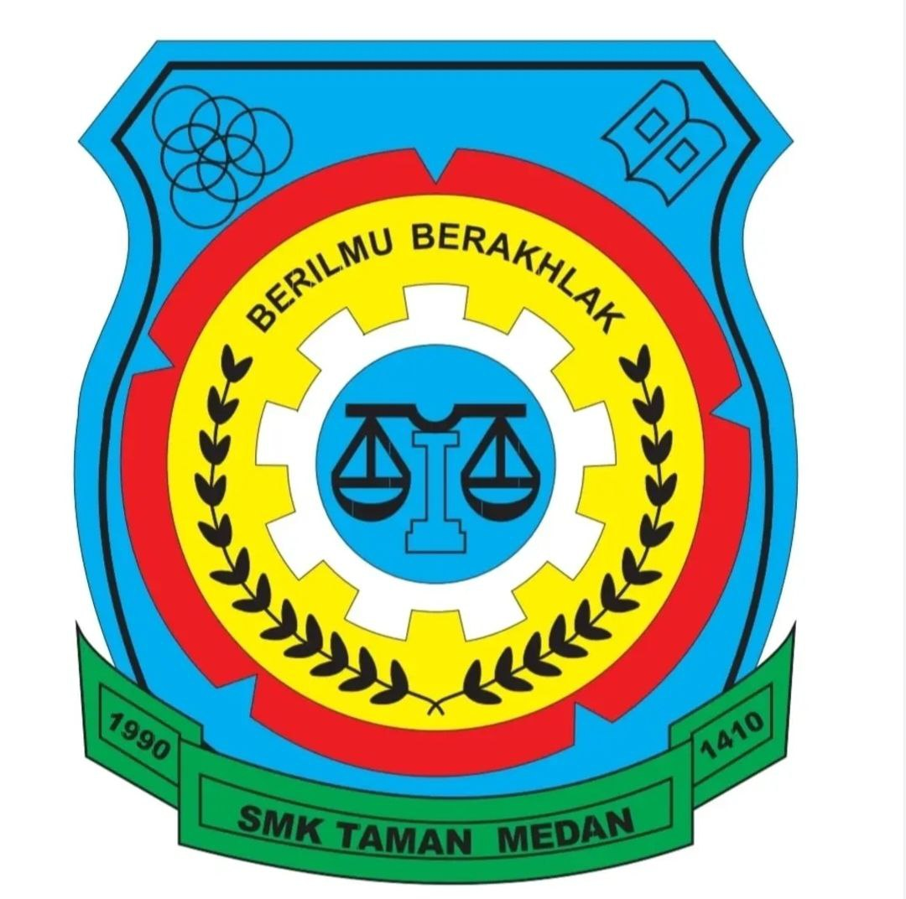
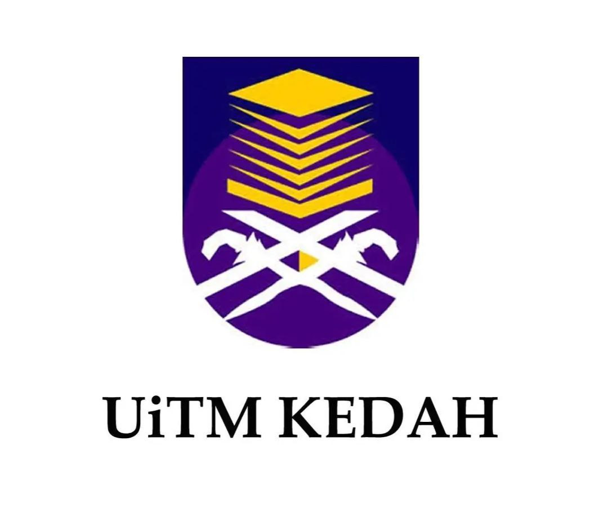

I began my early school at Tadika Pasti As-Siddiq in 5 until 6 years old. I was quite naughty and cheerful. However, I used to cried a lot in the morning because I refused to wake up from my dream.
Despite having difficulties to wake up every morning, I am the happiest when I arrived at my kindergarten as I met a lot of friends here.

I went to Sekolah Kebangsaan Taman Medan from standard 1 until standard 6. I did not have that much memories captured through pictures. However, I remembered most of the memories in my mind.
One of the most unforgettable memories when I was in primarry school was I fell and broke my hand. I took a break from school for 2 weeks to let my hand fully recover. It was painful but at least I have memories to remember as I grow old.

In my 13 years old until 17 years old, I continued my study at Sekolah Menengah Kebangsaan Taman Medan. I was still a playful young kid. However, reality started to hit me when I was in form 4 to form 5 as I am aware I have important exam later.
In spite of that, I am still able to create as many memories as I can with my friends. One of the most unforgettable memories was when my friends and I literally fell from our motorcycle. Luckily, it was just a small injury, just a bit bruises.
Before further my study in diploma, I entered pre-diploma at UiTM Seri Iskandar, Perak. Since we are still in Covid-19 pandemic, we got option whether to stay or go back home. Before I went back home, I stayed at my campus for 1 months.
One of the most highlighted memories would be my friends and I were chased by the monkeys. Before this, we only saw this incident at Tiktok, but then we too, experienced the same thing.

I further my study in Diploma at UiTM Merbok, Kedah. As I wrote this coding, I am currently in my last semester. In my semester 1 until semester 2, the class have been conducted online. However, we started going back to campus in semester 3 until semester 4.
It is kinda sad as I only get the opportunity to be close with my classmates in our final year. However, I am grateful to meet them as a student in Diploma in Library Management. Kindly pray for our good result with flying colours.